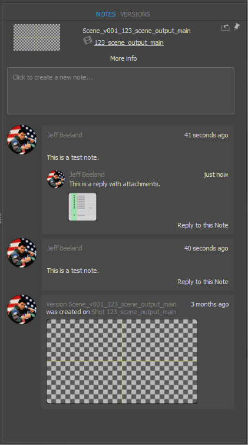

Shotgun Version Details Widget¶
Introduction¶
The version details widget is a Qt widget that renders the activity stream of a Version entity in one tab, and provides a list of related Version entities in another. A detailed view of of the Version entity, plus its associated fields, is provided, with the ability for a user to customize what fields they see.

Caching policy¶
As with the Shotgun Activity Stream Widget, all the content in the Notes tab is cached, and the widget requests only the changes since the last update.
VersionDetailsWidget¶
-
class
version_details.VersionDetailsWidget(bg_task_manager, parent=None, entity=None)[source]¶ Bases:
PySide.QtGui.QWidgetQT Widget that displays details and Note thread data for a given Version entity.
Signal entity_created(object): Fires when a Note or Reply entity is created by an underlying widget within the activity stream. Passes on a Shotgun entity definition in the form of a dict. Signal entity_loaded(object): Fires when a Version entity has been loaded by the widget. Passes on a Shotgun entity definition in the form of a dict. Signal note_selected(int): Fires when a Note entity is selected in the widget’s note thread stream. Passes on the entity id of the selected note. Signal note_deselected(int): Fires when a Note entity is deselected. Passes on the entity id of the selected note. Signal note_arrived(int, object): Fires when a new Note entity arrives and is displayed in the widget’s note thread stream. Passes on the entity id and Shotgun entity definition as an int and dict, respectively. Signal note_metadata_changed(int, str): Fires when the widget successfully updates a Note entity’s metadata field. The Note entity’s id and the new metadata are passed on. Signal note_attachment_arrived(int, str): Fires when an attachment file associated with a Note entity is successfully downloaded. The Note entity id and the path to the file on disk are passed on. Constructs a new
VersionDetailsWidgetobject.Parameters: - parent – The widget’s parent.
- bg_task_manager – A
BackgroundTaskManagerobject. - entity – A Shotgun Version entity dictionary.
-
current_entity¶ The current Shotgun entity that is OR will become active in the widget.
-
is_pinned¶ Returns True if the panel is pinned and not processing entity updates, and False if it is not pinned.
-
note_fields¶ The list of Note entity field names that are queried and provided when note_arrived is emitted.
Returns: list(str, ...)
-
note_threads¶ The currently loaded Note threads keyed by Note entity id and containing a list of Shotgun entity dictionaries.
Example structure containing a single Note entity:
6038: [ { 'content': 'This is a test note.', 'created_by': { 'id': 39, 'name': 'Jeff Beeland', 'type': 'HumanUser' }, 'id': 6038, 'sg_metadata': None, 'type': 'Note' } ]
-
attachments_filter¶ If set to a compiled regular expression, attachment file names that match will be filtered OUT and NOT shown.
-
notes_are_selectable¶ If True, note entity widgets in the activity stream will be selectable by the user.
-
pre_submit_callback¶ The pre-submit callback function, if one is registered. If so, this Python callable will be run prior to Note or Reply submission, and will be given the calling
NoteInputWidgetas its first and only argument.
-
add_note_attachments(file_paths, note_entity, cleanup_after_upload=True)[source]¶ Adds a given list of files to the note widget as file attachments.
Parameters: - file_paths – A list of file paths to attach to the current note.
- cleanup_after_upload – If True, after the files are uploaded to Shotgun they will be removed from disk.
-
add_query_fields(fields)[source]¶ Adds the given list of Shotgun field names to the list of fields that are queried by the version details widget’s internal data model. Adding fields this way does not change the display of information about the entity in any way.
Parameters: fields ([field_name, ...]) – A list of Shotgun field names to add.
Adds an action to the version tab’s context menu.
Action definitions passed in must take the following form:
dict( callback=callable, text=str, required_selection="single" )
Where the callback is a callable object that expects to receive a list of Version entity dictionaries as returned by the Shotgun Python API. The text key contains the string labels of the action in the QMenu, and the required_selection is one of “single”, “multi”, or “either”. Any action requiring a “single” selection will be enabled only if there is a single item selected in the Version list view, those requiring “multi” selection require 2 or more selected items, and the “either” requirement results in the action being enabled if one or more items are selected.
Parameters: action_definition (dict) – The action defition to add to the menu. This takes the form of a dictionary of a structure described in the method docs above.
-
select_note(note_id)[source]¶ Select the note identified by the id. This will trigger a note_selected signal to be emitted
-
deselect_note()[source]¶ If a note is currently selected, it will be deselected. This will NOT trigger a note_deselected signal to be emitted, as that is only emitted when the user triggers the deselection and not via procedural means.
-
download_note_attachments(note_id)[source]¶ Triggers the attachments linked to the given Note entity to be downloaded.
Parameters: note_id (int) – The Note entity id.
-
get_note_attachments(note_id)[source]¶ Gets the Attachment entities associated with the given Note entity.
Parameters: note_id (int) – The Note entity id.
-
load_data(entity)[source]¶ Loads the given Shotgun entity into the details panel, triggering the notes and versions streams to be updated relative to the given entity.
Parameters: entity – The Shotgun entity to load. This is a dict in the form returned by the Shotgun Python API.
-
set_note_screenshot(image_path)[source]¶ Takes the given file path to an image and sets the new note widget’s thumbnail image.
Parameters: image_path (str) – A file path to an image file on disk.
-
set_pinned(checked)[source]¶ Sets the “pinned” state of the details panel. When the panel is pinned it will not accept updates. It will, however, record the most recent entity passed to load_data that was not accepted. If the panel is unpinned at a later time, the most recent rejected entity update will be executed at that time.
Parameters: checked (bool) – True or False
-
show_new_note_dialog(modal=True)[source]¶ Shows a dialog that allows the user to input a new note.
Parameters: modal (bool) – Whether the dialog should be shown modally or not.
Sets the visibility of the undock and close buttons in the widget’s title bar.
Parameters: state (bool) – Whether to show or hide the buttons.